|
MLIR Passes v1.0
|
|
MLIR Passes v1.0
|
CudaQ offers a set of decomposition passes used by the nvq++ quantum compiler. The passes can be applied to a given quantum kernel as follows:
First, extract the MLIR context and define an MLIR PassManager as follows:
Next, define a DecompositionPassOptions object and pass to it a list with the decomposition passes that you desire to apply. For instance, in the following example the decomposition pattern CXToCZ is specified.
enabledPatterns in the cudaq::opt::DecompositionPassOptions is a list. Thus, more than one decomposition pattern can be applied using the same pass manager.Next, add a cudaq::opt::createDecompositionPass to the pass manager. Do not forget to pass options as input parameter of cudaq::opt::createDecompositionPass, as follows:
Finally, you can dump and visualize the effects of the decomposition pattern on your MLIR module as follows:
In the following, the list of all decomposition patterns offered by CudaQ are shown with a respective example.
The pattern CCXToCCZ replaces all the two-controls X gates in a circuit by two-controls Z gates.
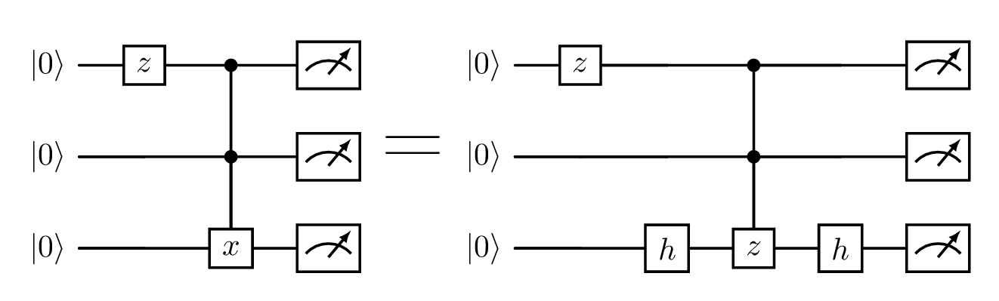
The pattern CCZToCX replaces all the two-controls Z gates in a circuit by two-controls X gates.
The pattern CHToCX replaces all the controlled Hadamard gates in a circuit by CNot gates.
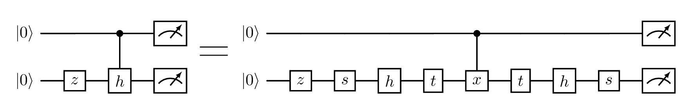
The pattern CR1ToCX replaces all the controlled R1 gates in a circuit by CNot gates.
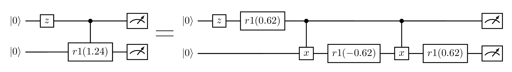
The pattern CRxToCX replaces all the controlled RX gates in a circuit by CNot gates.
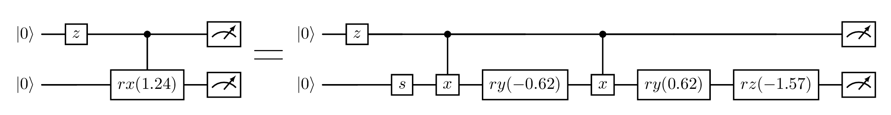
The pattern CRyToCX replaces all the controlled RY gates in a circuit by CNot gates.
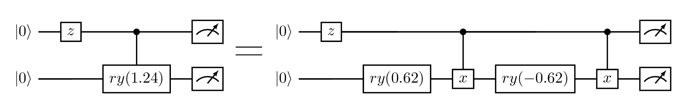
The pattern CRzToCX replaces all the controlled RZ gates in a circuit by CNot gates.
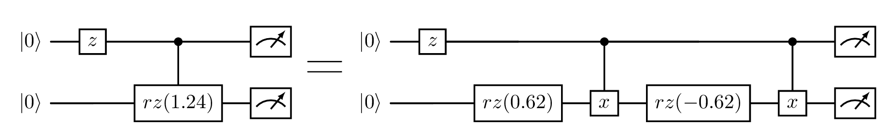
The pattern CXToCZ replaces all the CNot gates in a circuit by controlled Z gates.
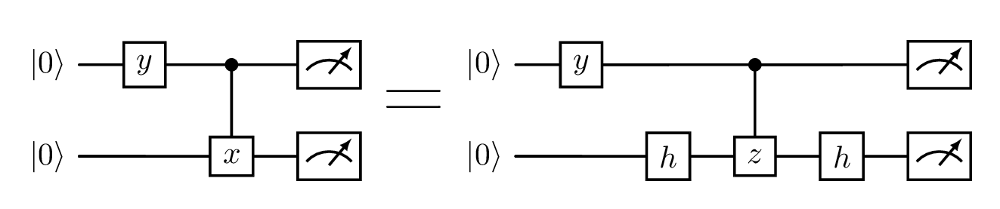
The pattern CZToCX replaces all the controlled Z gates in a circuit by CNot gates.
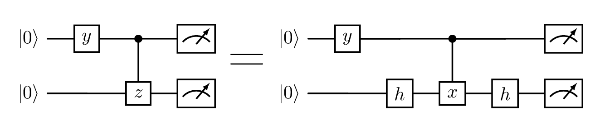
The pattern ExpPauliDecomposition applies Pauli Decompositions.
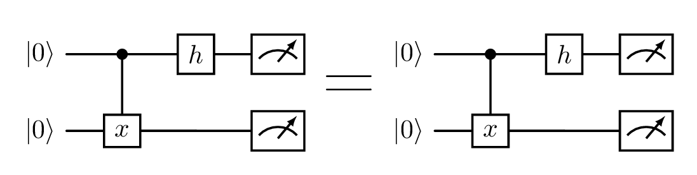
The pattern HToPhasedRx replaces all the Hadamard gates in a circuit by phased RX gates.
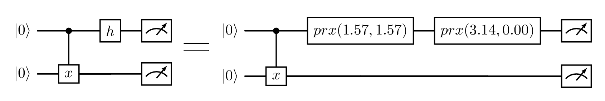
The pattern R1ToPhasedRx replaces all the R1 gates in a circuit by phased RX gates. 
The pattern R1ToRz replaces all the R1 gates in a circuit by RZ gates.

The pattern RxToPhasedRx replaces all the RX gates in a circuit by phased RX gates.

The pattern RyToPhasedRx replaces all the RY gates in a circuit by phased RX gates.
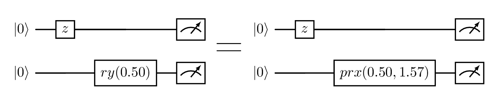
The pattern RzToPhasedRx replaces all the RZ gates in a circuit by phased RX gates. 
The pattern SToPhasedRx replaces all the S gates in a circuit by phased RX gates.
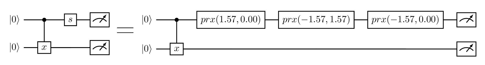
The pattern SToR1 replaces all the S gates in a circuit by R1 gates.
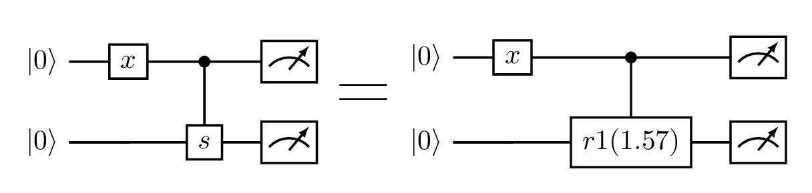
The pattern SwapToCX replaces all the swap gates in a circuit by CNot gates.
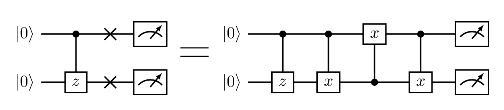
The pattern TToPhasedRx replaces all the T gates in a circuit by phased RX gates. 
The pattern TToR1 replaces all the T gates in a circuit by R1 gates.

The pattern U3ToRotations replaces all the U3 gates in a circuit by rotation gates. 
The pattern XToPhasedRx replaces all the X gates in a circuit by phased RX gates.
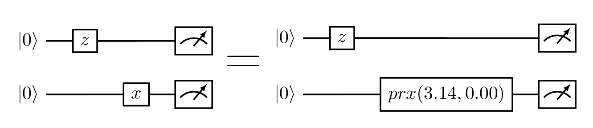
The pattern YToPhasedRx replaces all the Y gates in a circuit by phased RX gates.
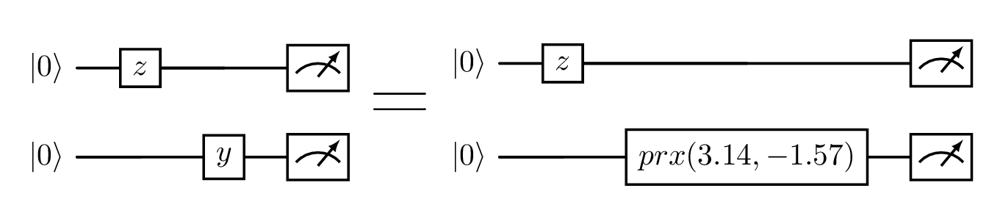
The pattern ZToPhasedRx replaces all the Z gates in a circuit by phased RX gates.